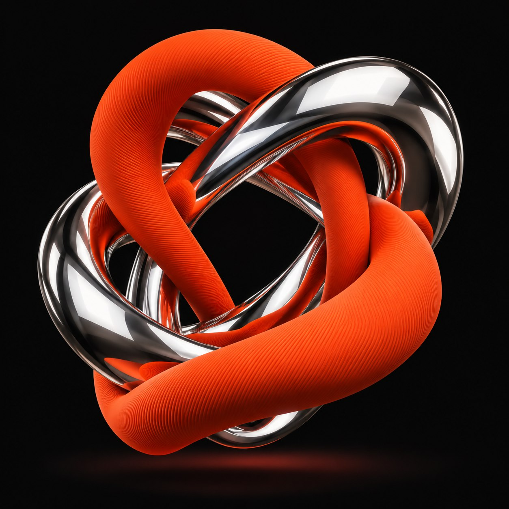
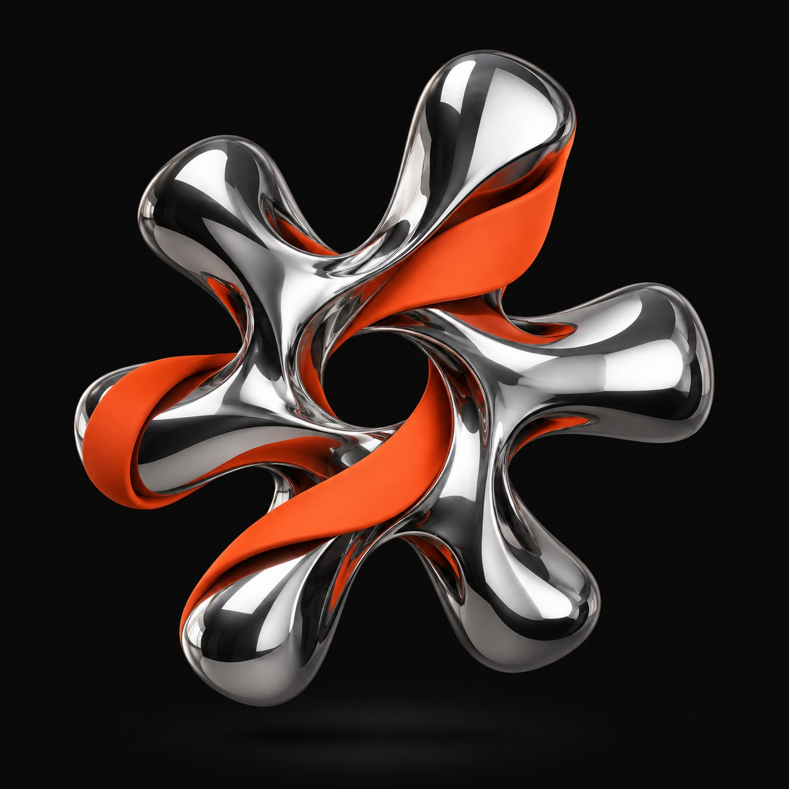

ЗНАКОМСТВА / 30 МИН
Открываем вечер без формальных представлений. Короткие разговоры о том, над чем вы сейчас работаете и какие идеи не дают покоя.
Формат: свободное знакомствоКонцептуальный демосайт
Смелая графика. Живое взаимодействие.
Дизайн, который хочется рассматривать
и исследовать дальше.

NEW FORMSОна меняет привычное.
Соединяет несоединимое.
Остаётся в памяти.

A DIFFERENTКартинка привлекает.
Детали удерживают.
FORMA — вымышленное творческое событие и пример того, каким может быть ваш сайт. От первого впечатления до последнего нажатия.
Графика, ритм и интерактив работают вместе. Каждый следующий экран продолжает историю.
Выйти за рамки знакомого.
Не стоять на одной идее.
Увидеть целое в деталях.
Попробуйте фильтры и закладки.
Соберите свой маршрут по демопрограмме.
Демонстрационная программа
Открываем вечер без формальных представлений. Короткие разговоры о том, над чем вы сейчас работаете и какие идеи не дают покоя.
Формат: свободное знакомствоЧто остаётся от дизайна, если убрать визуальные эффекты? Разбираем связь идеи, контекста и решения. Обсуждаем вопросы, которые стоит задать до первого макета.
Формат: разговор с открытым обсуждениемОдна задача, несколько точек зрения. Пробуем непривычные ограничения, делимся ходом мысли и собираем идеи, к которым не пришли бы в одиночку.
Формат: совместная работа в небольших группахЧерновики, тупики и решения, которые не вошли в портфолио. Обсуждаем ценность процесса и то, как рассказывать о своей работе честно и увлекательно.
Формат: обсуждение творческого процессаПродолжаем разговоры без таймера. Обмениваемся идеями, обсуждаем будущие коллаборации и сохраняем контакты людей, с которыми хочется встретиться снова.
Формат: неформальное общениеДобавьте интересные сессии с помощью значка закладки.
Все сессии и время вымышлены.
Это демонстрация дизайна и взаимодействия.
Не фон для контента.
Часть самого впечатления.
Посмотреть на привычное
под неожиданным углом.
Новые знакомства начинаются
с простого «привет».
Заберите с собой не только вдохновение.
Заберите начало нового разговора.
Нет. FORMA — вымышленное название для демонстрационного сайта TwK. Здесь показаны визуальный стиль, интерактивная программа и пример регистрации. Проект не представляет реальное мероприятие или организацию.
Доступна только тестовая форма. Она показывает, как может выглядеть регистрация, проверяет поля и создаёт демонстрационную карточку. Заявка никуда не отправляется и не даёт права входа.
Да. Название, палитру, тексты, графику, программу и форму можно адаптировать под мероприятие, студию или другой проект. Набор функций и объём работы согласуются отдельно.
Любой посетитель может изучить страницу, переключать категории программы, собрать собственный маршрут и проверить форму. Можно использовать вымышленные данные. Личные данные в браузере не сохраняются.
Попробуйте форму.
Оцените ощущения от деталей.